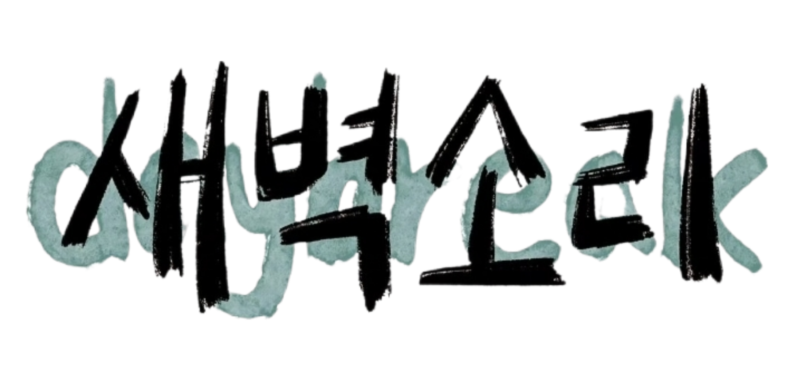

새벽소리 | IT어쿠스틱 밴드 동아리
IT어쿠스틱 밴드 동아리 새벽소리 새벽소리는 모두에게 열린 경험을 제공합니다. 노래와 연주를 사랑하는 사람들이 모여 함께 즐거운 추억을 만들어갑니다.
새벽소리의 구성원들과 파트별 정보를 확인해보세요.
정기공연의 세트리스트와 공연 기록을 확인해보세요.
새벽소리의 다양한 소식과 활동을 만나보세요.
하고 싶은 말이나 응원의 메시지를 남겨주세요.
"어떻게든 되겠죠 쌰갈"